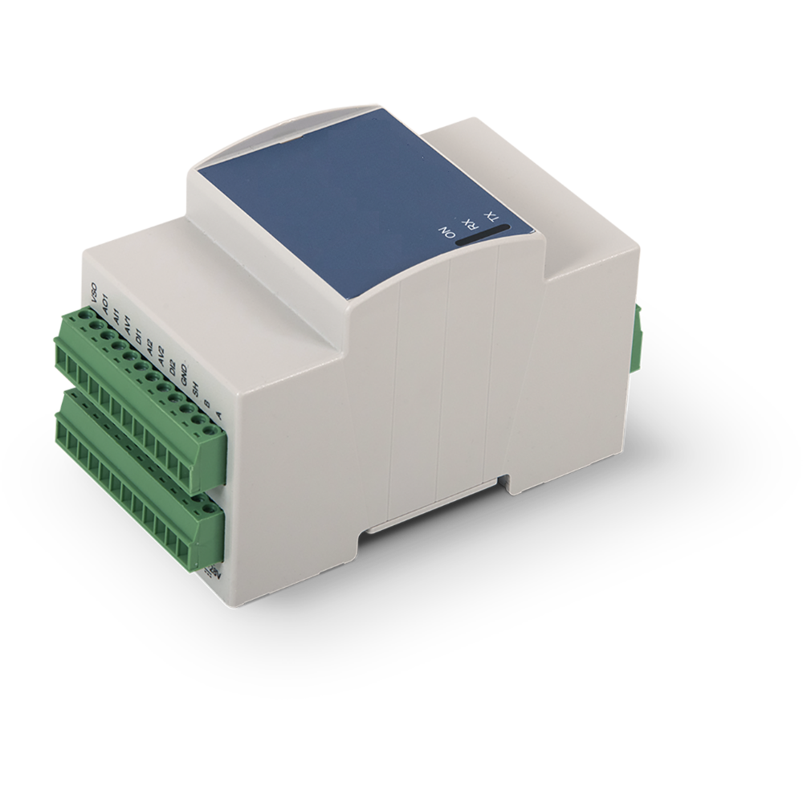

Offload IF97 steam/water, mass flow, and energy calculations to a dedicated module—connected via Modbus RTU over RS‑485 and mapped directly into your PLC holding registers.

The Helix Energy Transfer module is a DIN-rail mounted embedded coprocessor designed to sit beside your PLC and handle intensive thermodynamic and flow calculations. It exposes a clean Modbus RTU RS‑485 interface, presenting results as PLC-friendly holding registers.
Three primary calculation engines run on the module, each exposing inputs, constants, and results through a structured holding register map.
Implemented according to IAPWS IF97 formulations, the module computes key thermodynamic properties such as enthalpy, entropy, density, and specific volume from pressure and temperature inputs.
The mass flow engine converts sensor inputs—such as differential pressure, line pressure, and temperature—into real-time mass and volumetric flow values for water and compatible fluids.
The energy engine computes BTU and other energy metrics by combining flow, temperature, and fluid property data—ideal for chilled water, hot water, and steam energy metering.
The module connects directly to your PLC over RS‑485 using Modbus RTU. All configuration, constants, and results are exposed as a structured holding register map, ready for your ladder logic or function blocks.
Development of our embedded edge‑calculation platform is ongoing, and additional technical details—such as integration concepts, register structures, and example applications—will be shared as they are available.
This product series will continue to evolve with more offerings. Please check back for updates, new embedded functions will regularly become available.